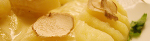

Gnocchi di patate mit parmesan-rahmsauce und weissen trüffel
6 von 6ca. 700 gramm festkochende kartoffeln schwellen. noch warm schälen und durch das passe-vite streichen.
150 g mehl und salz dazugeben und zu einem geschmeidigen teig kneten. ca. 2 cm dicke rollen formen uns
mit einem messer ringli schneiden. mit einer gabel furchen eindrücken damit die gnocchi die sauce besser aufnehmen können.
in einem topf gesalzenes wasser aufkochen und die gnocchi portionenweise ca. 10 sekunden sieden.
